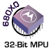
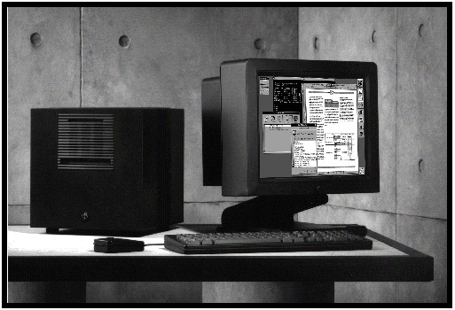

I make my living messing about with various sorts of computers and software, so I spend a lot of time in their company. Needless to say, this has had the effect of seriously warping my mind and my sense of humour.
Over the years I have developed a rigid set of ill-informed opinions and bad attitudes about various types of computer hardware and software. I will share some of them here:
In terms of age, I am on the extreme edge (gray area?) between the baby boomers and the generation X'ers. So when I first studied computing, it involved FORTRAN, punched cards, and a timesharing Amdahl mainframe running the MTS operating system at The University of Alberta. For various reasons, including my own inattention and lack of imagination, this style of computing did not motivate me.
When I was about half finished my engineering degree, a friend told me that as electrical engineering students, we could get accounts on the cool new UNIX machine (a VAX 11/780) that belonged to computing science and was running the new Berkeley 4.2 edition of UNIX. We did so, and while I was quite intrigued by the totally interactive mode of use, and the accompanying culture, my other studies interfered with really getting immersed in UNIX.
The following year, I had to take a computing science course on the subject of operating systems, taught by Mr. Daniel Boulet. Up until this time, the coursework had been done on the university's IBM mainframes, but Mr. Boulet decided to turn over a new leaf and arranged to have at least a few of the assignments be done on the UNIX system. Unfortunately for the class, the other users of the UNIX system, a group of CS grad students, objected loudly to this arrangement and we were not able to use the UNIX sytem for the rest of the course. Unfortunately for me, by this time I was hooked on UNIX, and the bug was firmly planted.
Once I got out of university, my first job, at the
 Alberta Research Council
,
exposed me to
DEC
computing, local area networks, and C programming.
I was quite comfortable in the
VMS
system, and I ran into it over and over again during my travels.
Alberta Research Council
,
exposed me to
DEC
computing, local area networks, and C programming.
I was quite comfortable in the
VMS
system, and I ran into it over and over again during my travels.
Until this time, I hadn't had much interest or vision of a personal computer, but my mother is a writer, and a bit of a computer scientist, and she was quite taken with the idea of word processing, rather than typing and re-typing manuscripts. She bought a Kaypro computer and a TTX daisy-wheel printer, and the rest of the family was brought into the home computer era quite quickly.
My first computer was a DEC VT-180 "Robin" . This was basically a VT-100 terminal with a Z-80 single board computer running CP/M and installed inside the VT-100 and an extra box on top which contained two 5.25 inch floppy drives. I could do a little bit of programming with this box, using a freeware C compiler, whose name escapes me now.
Later, I sold the Robin and purchased a very powerful computer for it's time: The Sage II , which was physically smaller than an Apple II, but packed an 8 Mhz  68000 CPU and 512 Kb of RAM. To possess a 32 bit processor at this time (1985) was cool indeed. The only problem with the Sage was that it only had two Mitsubishi 5.25 inch floppy drives, each capable of storing up to 800 Kb per disk. There was a Sage IV model which provided a 10, 20, or 40 Mb hard drive, but the cost of hard drives was prohibitive at the time. I recall paying CDN $1000 for a 5.25 inch 40 Mb hard disk a couple of years later. The Sage could run either the UCSD P-System (an early version of the same idea that Java is based upon) or CP/M-68K. Sage had even modified the P-System to handle a primitive time-slicing BIOS so that the system was truly multi-user.
I've always enjoyed Sun's motto: The Network IS The Computer. My own computer has been on the Internet or its precursor one way or another since 1987. The University of Calgary graciously offered me a 1200 baud UUCP connection for free, and I was on USENET at ...!calgary!ve6boa for many years, using my trusty Stride 440, with a 10 Mhz Motorola 68010 CPU, whopping 8 Mb of RAM and 40 Mb of disk and System V UNIX getting UUCP e-mail and news feeds. It used to take sixty or seventy 800 Kb, 5.25 inch floppies and a good part of a day to make a backup. Gee, it makes you kind of nostalgic, doesn't it?
Anyhow, later on, around 1990, the U
of Calgary said that I had to speed up my connection to at least 2400 baud
if I wanted to stay connected. I bought faster
and faster modems
(including the legendary
 Telebit Trailblazer) to
stay online, and even agreed with the university when they
asked me to feed other sites which approached them for feeds,
but disk space was always a problem and disk drives were
still too expensive to maintain much of a feed.
When I finally left Calgary in 1992, I
lost the connection to the U of Calgary and I had to rely on
employers networks or ISPs for my Internet connectivity fix.
Telebit Trailblazer) to
stay online, and even agreed with the university when they
asked me to feed other sites which approached them for feeds,
but disk space was always a problem and disk drives were
still too expensive to maintain much of a feed.
When I finally left Calgary in 1992, I
lost the connection to the U of Calgary and I had to rely on
employers networks or ISPs for my Internet connectivity fix.
 In early 1991, my Stride 440 machine had a serious hardware failure. The manufacturer had gone out of business, and there were few of these systems out and about, so finding spare parts was a nightmare. For a short time, I ran a variant of System V on a Motorola MVME133 system that I managed to acquire, but the lack of software media and documentation was a serious challenge in spite of the ruggedness of the hardware. As a result, I began looking for a newer system, which would run UNIX (preferably BSD) and that would be more maintainable in terms of hardware.
The list came down to two systems: The HP-9000/325 or the NeXTcube. I ended up buying the NeXT because it was a better deal in terms of software and overall it was an architectural revolution compared to the HP. In November of 1991, I installed my NeXTcube.
Since then, this incredibly reliable machine was known variously as:
- ..!calgary!ve6boa
- ..!calgary!ve6vq
- owrlakh.wl.aecl.ca
- owrlakh.unbc.edu
- owrlakh.magmacom.com
- owrlakh.valuenet.com
- ve6vq.ampr.org
- owrlakh.gadallah.com
The dear old black cube was up for at least 95% of the more than 7 years that passed and in the 8 locations across North America it was located at since I bought it in November 1991. It served as a amateur packet radio router, a file server, e-mail server, personal computer, etc. Unfortunately, due to the age of this machine, and particularly it's lack of a modern web browser (very ironic, since the first web browser was developed on a NeXT), I had to retire it in 2002.
Deepest kudos go, however, to the NeXT design team and Steve Jobs for his incredible vision of the future of computing. When it came out in 1988, the NeXT had features that didn't appear on "mainstream" PCs for another 7 or 8 years. In fact, there were rumours in the early 90's that Microsoft was studying the NeXT software very carefully during the design of what came to be known as Windows 95 and later Windows NT. At the time of the genesis of the NeXT, the most advanced computing environments were from places like Xerox PARC and the most evolved OS was UNIX and most GUI's used X Windows. NeXT's choice to use Objective C as the basis for GUI and it's frameworks was literally decades ahead of its time.
After spending a lot of time discussing the (home) construction of PCs from components, I've also learned to appreciate the careful efforts NeXT put into their designs to ensure that they were balanced. This means that the data transfer speeds between all of the components were matched to ensure that each component would work at its maximum speed and potential. This is in contrast to many PC layouts, where, for example, the video card has blinding speed in moving data around in video RAM, yet the CPU faces a bottleneck in the bus in getting data into the video RAM. The NeXT had no less than 13 parallel DMA channels implemented in hardware which could all transfer data simultaneously and independent of the CPU.
{kind=link}
Incidentally, probably the worst piece of hardware on the NeXT Cube was the Canon magneto-optical (MO) disk drive. In 1990, it was cutting edge, and it was the first MO drive installed on production machines. However, it is slow, loud, hot, and prone to failure. Even NeXT had to retreat not long after the introduction of the NeXTcube and started shipping conventional hard drives as part of the basic configurations.
I went through three of these drives, and since all of my backups were on MO disks, I had to go to some considerable trouble to get them off of the older NeXT MO disks. My thanks go to Dr. David Hill of the Computing Science department at The University of Calgary, and especially to Dr. Leonard Manzanara of The Southern Alberta Institute of Technology for patiently waiting around while I copy loads of data of questionable value onto Fujitsu DynaMO disks from my old NeXT MO disks using Dr. Manzanara's NeXT cube.
Apple and the Mac
 My wife has been a long time fan of the Apple Macintosh,
and I had some experience using Macs at some of my jobs,
but I had never become a serious fan of the
Classic Mac OS.
This is probably because of the command line orientation
I had learned from my earliest experiences with computers.
Sometime around 2001, I saw an Apple laptop with a mesmerizing appearance.
It was a so-called
TiBook,
a very thin and elegant laptop with a
Titanium case and an operating system that was clearly not the
Classic Mac OS.
I had to have one.
My wife has been a long time fan of the Apple Macintosh,
and I had some experience using Macs at some of my jobs,
but I had never become a serious fan of the
Classic Mac OS.
This is probably because of the command line orientation
I had learned from my earliest experiences with computers.
Sometime around 2001, I saw an Apple laptop with a mesmerizing appearance.
It was a so-called
TiBook,
a very thin and elegant laptop with a
Titanium case and an operating system that was clearly not the
Classic Mac OS.
I had to have one.
I started researching what Apple had done in the area of OS software, and I was thrilled to find that the OS X operating system had been derived almost entirely from the NextStep and OpenStep operating systems Apple inherited when it acquired what was left of NeXT in 1997 (Amit Singh has written an excellent history of Apple operating systems). As an enthusiastic fan of NextStep, I had little doubt that the new OS X operating system would succeed and thrive eventually. I ended up buying an PowerBook G4 (Ivory) and I was not disappointed. Since about 2001 all of the "personal" computers in my house have been Apples running OS X. I have also been greatly impressed with both the reliability of these computers and the level of support that Apple provides for them. My first laptop experienced exactly two non-fatal problems in its life:
- The modem connector got a bent wire
- The paint started flaking off of the Titanium case
Intel vs. Motorola
In the late 70's, Motorola was quite successful with its 6800 series 8 bit microprocessors and microcontrollers, and it decided to build a 32-bit microprocessor. Motorola's team looked very carefully at many aspects of microprocessor design, programming, and applications. As a result, they started with a completely clean slate. As a result of their dilligence, many computers even today, 20 years later use 68000-series processors, and the cores of most of Motorola's specialized microcontrollers are 68000-series processors.
On the other hand, Intel took an 8085 and stretched out a couple of internal registers and called it a 16 bit processor, the 8086. They did it again with the 80286, the 80386, the 80486, and the Pentium, and so on and on. Only with the advent of the 486 did we get a processor which had memory segments large enough to treat them as flat address space and a built-in memory manager. Even then, you could cook dinner on the chip, whereas Motorola's PowerPC chip does twice the work on a chip a quarter the size using a tenth of the electricity.
A Confession
At this point, I must admit that I am no doubt horribly biased. For many years, I have had a notion that amongst computer folks, one is "imprinted" with regard to how one feels things should rightly be done by the first computer one is exposed to. My inital exposure to computers was via the IBM 370 series mainframe architecture and the Motorola MC6800 series of microprocessors. Perhaps if I had been exposed to the Intel i8085 CPU first, I would have different feelings towards Intel and PCs today.
Unfortunately, an inescapable economic fact called economy of scale makes avoiding PCs virtually impossible, or very expensive at best. I speak from experience, since I paid around $10,000 around 1991 for a 68000 based computer that was about as powerful as the 80286 based PCs that were available a few years later for about $2000. Since the advent of the 80486, with it's built-in memory management and the ability to have large (4 Gb) segments, and the availability of cheap, quality OSes like Linux, FreeBSD, BSDI, BeOS, NeXTstep, etc. I have grudgingly accepted that I have two PCs at home, one running Windows and one running OpenBSD, and I'm almost oblivious to it now.

DefCon
In July, 2001, I made my first pilgrimage to a DefCon convention. This convention (Def-Con 9) was held at the Alexis Park hotel in Las Vegas, as it has been for the past several years.
The convention was above all, over-crowded. There were over 5000 attendees that year, and I sympathize with the tightrope the organziers must walk: Since most people are here on their own dime, not on business, the cost to attend the convention must be low. To attract attendees, however, the facilities and space must accomodate them. Facilities to handle this many people are generally priced for commercial and business uses, so the cost become prohibitive. For example, the Black Hat Briefings, a conference addressing similar topics to DefCon (and organized by the same person who organizes DefCon) but is more targeted toward business and government, costs considerably more to attend.
I was planning to attend many of the seminars and presentations, but the sheer volume of bodies in many of the talks was so large that there was standing room only. This, combined with the incredibly hot weather in Las Vegas at this time of year (110-120 degrees F) made for a lot of uncomfortable standing in hot rooms.
The most captivating feature of the convention was, for me, the "Capture The Flag" or CTF net. This was an amazing, ad-hoc collection of every form of power and network wiring possible, connecting an astonishing menagerie of computing equipment; everything from an Apple II to a Compaq AlphaServer. The general idea of the game being played on this network was for teams to setup some services on a computer. Others would try to detect these services, figure out what they do, and ultimately try to hack them.
There was a specfic area set out for this network, but it wasn't large enough, and there were people and equipment sprawled out in every nook and cranny of the building. Internet connectivity was like gold, and telephone modems, data-enabled cellular phones, and 802.11b wireless LAN cards abounded. There wasn't a single AC outlet, telephone plug, or 10-Base-T jack in the building that wasn't occupied. The appearance was as if someone had taken a fair sized chunk of the Internet and crammed it into a single building.
I spent most of the convention getting connected to the CTF net and subsequently trying to keep up with what was going on. I brought a Dell Inspiron 7500 laptop with OpenBSD 2.9 snapshot loaded on it. I ran trafshow from time to time, and saw packet rates of 5000 per second, on a 10-Base-T LAN! This was a ferocious packet storm! I logged as many as I could, and hope to analyze them later.
What I also found remarkable about the convention was the strong counter-culture that many of the people attending seemed to have. There were many "alternative" forms of clothing and dress, and I can only presume that these reflected a similar array of alternative cultural mentalities. As someone on the edge of 40 at the time, I felt like quite an old man at this event, and I was somewhat amused when someone recognized my T-shirt from a 1993 USENIX convention and commented on it. I'm already a classic!
{kind=link}
I wanted to take more pictures of what was going on, but I was a little nervous about people's attitudes towards getting their picture taken. Most didn't seem to mind, but some jumped up and started screaming that they hadn't given their permission. I even wandered over to the CTF NOC and politely asked if I could take a picture. I was told that this would not be allowed. I might as well have asked if I could pee on the floor, based on the tone of the answer. This really bothered me, since all of the DefCon newbies like me were reprimanded to always be polite at the introductory FAQ session. I ended up taking a few pictures, just to prove I was there.
I learned that to get the best experience from the conference, you really need a room in the hotel. Book early folks. All of the unofficial fun stuff and social networking happens before and after all of the official activities.